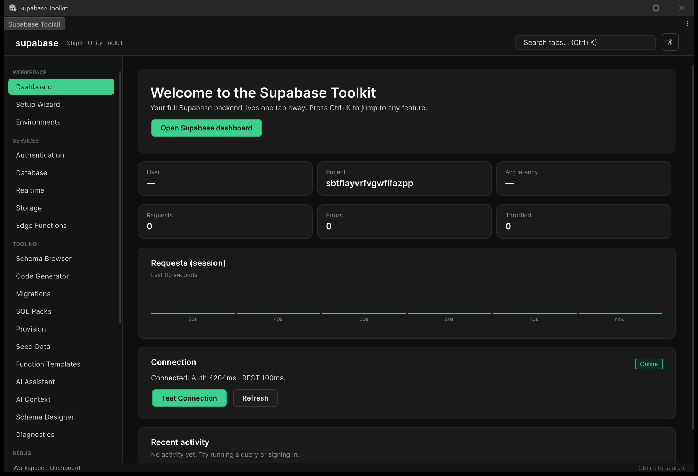
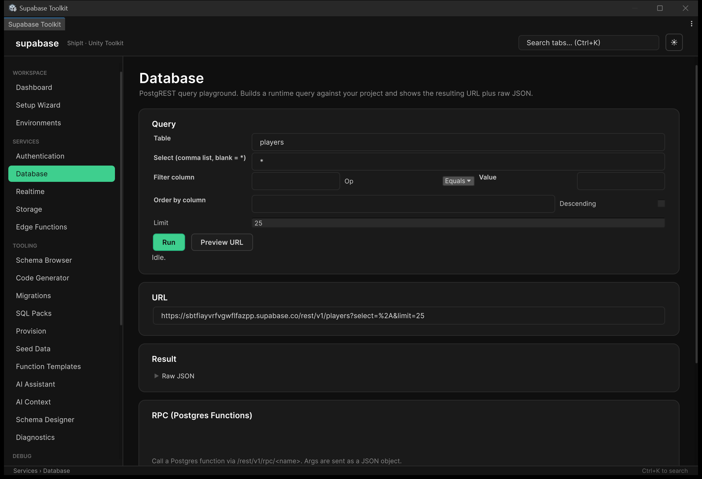
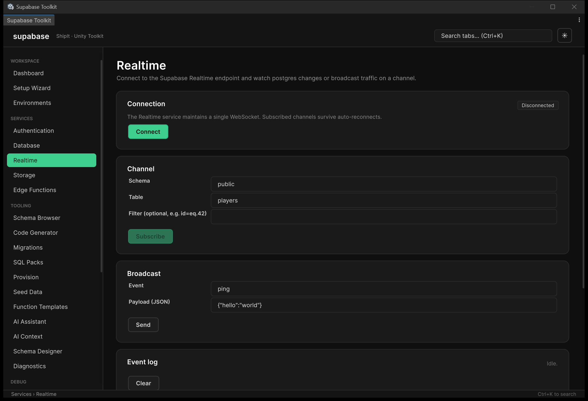
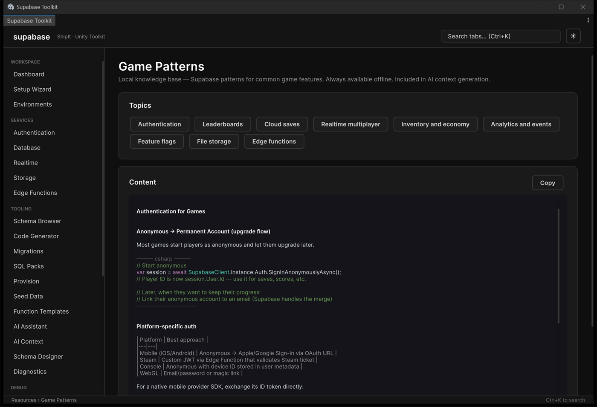

Connect safely
Store the anon key in runtime settings and keep privileged keys in editor-local storage.
Build authentication, player data, realtime systems, storage, economy and live operations against infrastructure you own—without a proxy service or a puzzle of third-party DLLs.

ShipIt gives Unity teams the parts that usually get built in scattered scripts: a runtime SDK, editor windows, generated C# models, SQL-backed game systems, and operational tools that keep privileged actions out of player builds.
Browse data, inspect live channels and install game backend patterns without leaving Unity. Open any image at full size to inspect the shipped interface.



The toolkit is built around the steps a Unity developer repeats on every connected game: connect, inspect, generate, provision, test and operate.
Store the anon key in runtime settings and keep privileged keys in editor-local storage.
Browse tables, columns, primary keys and RLS coverage before writing gameplay code.
Create serializable models and typed query snippets grounded in your actual schema.
Apply idempotent SQL for common systems like cloud saves, wallets, guilds and mail.
Use diagnostics, request inspection, realtime monitors and explainers while you work.
Use remote config, announcements, flags and moderation workflows without patching a build.
Start with Supabase primitives, then add secure game systems without replacing your backend.
Idempotent SQL, Row Level Security and C# services for systems that normally consume weeks of backend work.
Setup, environments, schema browsing, model generation, SQL, RLS coverage, migrations and diagnostics stay inside Unity.
Privileged credentials and trusted mutations remain outside player builds.
Runtime and editor code are included so your team can inspect, debug and extend the integration.
Your Unity project talks to your Supabase project. ShipIt does not proxy credentials or game data.
Built for Unity 2022.3 LTS and Unity 6, with Mono, IL2CPP, desktop, mobile and WebGL paths.
The SDK, editor tools and backend packs do not depend on a render pipeline. UI samples use Unity UI/TextMeshPro and can be restyled for Built-in, URP or HDRP projects.
Core HTTP, auth, database, storage and realtime code run through Unity-native networking paths. The included UI samples use Unity UI and TextMeshPro.
Call your Supabase project directly with async APIs, typed models, cancellation support and actionable server errors.
await SupabaseClient.Instance.Auth .SignInAnonymouslyAsync(captchaToken); var profile = await SupabaseClient.Instance.Database .From<PlayerProfile>("player_profiles") .Where(p => p.id == playerId) .MaybeSingleAsync(); var channel = SupabaseClient.Instance.Realtime .FromTable("player_profiles"); channel.OnUpdate<PlayerProfile>(Render); await channel.SubscribeAsync();
The current package focuses on the failure modes that appear after prototypes become real games.
Deep-link callbacks, code exchange, session restoration and bounded refresh retries.
Captured values are evaluated without Expression.Compile(), with linker protection included.
Heartbeat monitoring, bounded reconnect backoff, automatic rejoin and token propagation.
Persisted TUS locations, offset reconciliation and safe restart after expired sessions.
ShipIt removes integration friction. It does not replace careful backend design. The safest workflows still validate score, economy and entitlement changes through Postgres functions, Edge Functions or other trusted server contexts.
Review the documentation now. When the package listing is ready, update one URL and every Asset Store action on this site will point to it.
ShipIt AWS Toolkit — Cognito auth with SRP and MFA, S3 multipart storage, DynamoDB with typed models, Lambda invocation and game systems, for every Unity platform including WebGL. Explore the AWS Toolkit →